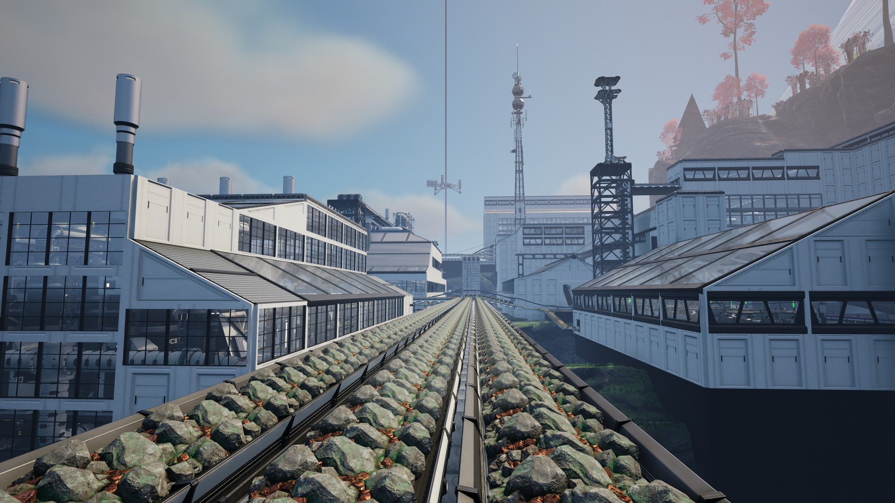
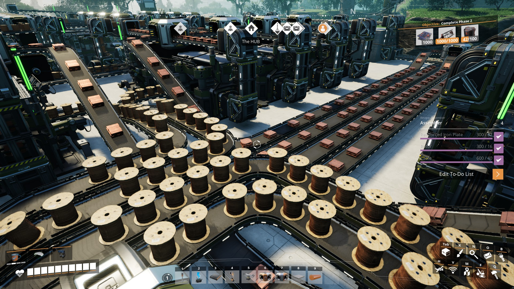

Korea
Got the chance to study abroad in Seoul, South Korea at Yonsei University. There I got to experiance the city life of Seoul, from the sites to the cuisine. One of my favorite parts was visiting both Busan (the city in the picture) and Jeju Island (the picture on my main profile page).
Hiking

One of my favorite outdoor activities when I have a free day on the weekend is to find a spot in the Green Mountains I haven't been and go hiking. My most recent hike was on Mt. Elmore where some of my friends and I camped at the State Park and hiked up to the fire tower at the top.
Games

Sometimes in the evening or on weekends when I am caught up on my work and the weather isn't super great, I enjoy staying in and playing games with my friends from home. One of my favorite games I've played recently is Satisfactory, were I mainly enjoy relaxing and spending time building elaborate structures.